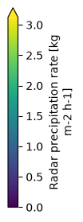

UK Met Office - C-band rain radar composite#
This notebook describes how to access and use the zarr-version of the UK Met Office C-band rain radar 1 km composite dataset. The dataset provides 5-minute precipitation rates in mm/h at 1 km × 1 km spatial resolution over the United Kingdom, derived from the Met Office radar network. The data uses the OSGB 1936 / British National Grid projection (EPSG:27700). The v0.1.0 zarr version of the dataset covers July 2005 to the end of 2025.
The raw NIMROD data was downloaded from CEDA and converted using mlcast-dataset-metoffice-nimrod and mlcast-dataset-tiff2zarr.
import matplotlib.pyplot as plt
import cartopy.crs as ccrs
import mlcast_datasets
cat = mlcast_datasets.open_catalog()
list(cat.precipitation)
['radklim_hourly',
'radklim_5_minutes',
'dmi_10_minutes',
'it_dpc_sri_5min',
'uk_metoffice_5min',
'be_rmi_radclim_mfb_5min',
'fr_mf_prate_5min']
UK Met Office 5-min radar precipitation#
The UK Met Office radar dataset is available in the intake catalog as uk_metoffice_5min.
ds = cat.precipitation.uk_metoffice_5min.to_dask()
ds
<xarray.Dataset> Size: 31TB
Dimensions: (time: 2055276, y: 2175, x: 1725, missing_times: 100404)
Coordinates:
* time (time) datetime64[ns] 16MB 2005-07-05 ... 2025-12-31T23:55:00
* y (y) float64 17kB 1.55e+06 1.548e+06 ... -6.235e+05 -6.245e+05
* x (x) float64 14kB -4.045e+05 -4.035e+05 ... 1.318e+06 1.32e+06
lat (y, x) float64 30MB dask.array<chunksize=(2175, 1725), meta=np.ndarray>
lon (y, x) float64 30MB dask.array<chunksize=(2175, 1725), meta=np.ndarray>
* missing_times (missing_times) datetime64[ns] 803kB 2005-07-05T06:40:00 ....
Data variables:
crs float32 4B ...
RR (time, y, x) float32 31TB dask.array<chunksize=(1, 2175, 1725), meta=np.ndarray>
Attributes:
title: UK Met Office C-band rain radar 1 km composite
license: OGL-UK-3.0
history: Created at 2026-02-16T22:33:20+01:00
mlcast_created_on: 2026-02-16T22:33:20+01:00
mlcast_created_by: Gabriele Franch <franch@fbk.eu>
mlcast_created_with: https://github.com/mlcast-community/mlcast-da...
mlcast_dataset_version: 0.1.0
mlcast_dataset_identifier: UK-METOFFICE-RADAR
consistent_timestep_start: 2005-07-05T00:00
base_frequencies: 5min:2005-07-05T00:00/Nonevar_name = "RR"
crs_name = ds[var_name].grid_mapping
data_crs = ccrs.Projection(ds[crs_name].crs_wkt)
g = (
ds[var_name]
.sel(time="2020-10-03T12")
.isel(time=slice(None, 3))
.plot(
transform=data_crs,
cmap="viridis",
add_colorbar=True,
col="time",
robust=True,
subplot_kws=dict(projection=data_crs),
vmin=0,
)
)
for ax in g.axs.flat:
ax.coastlines()
ax.gridlines(draw_labels=["top", "left"])
/home/runner/work/mlcast-datasets/mlcast-datasets/.venv/lib/python3.12/site-packages/cartopy/io/__init__.py:242: DownloadWarning: Downloading: https://naturalearth.s3.amazonaws.com/50m_physical/ne_50m_coastline.zip
warnings.warn(f'Downloading: {url}', DownloadWarning)
